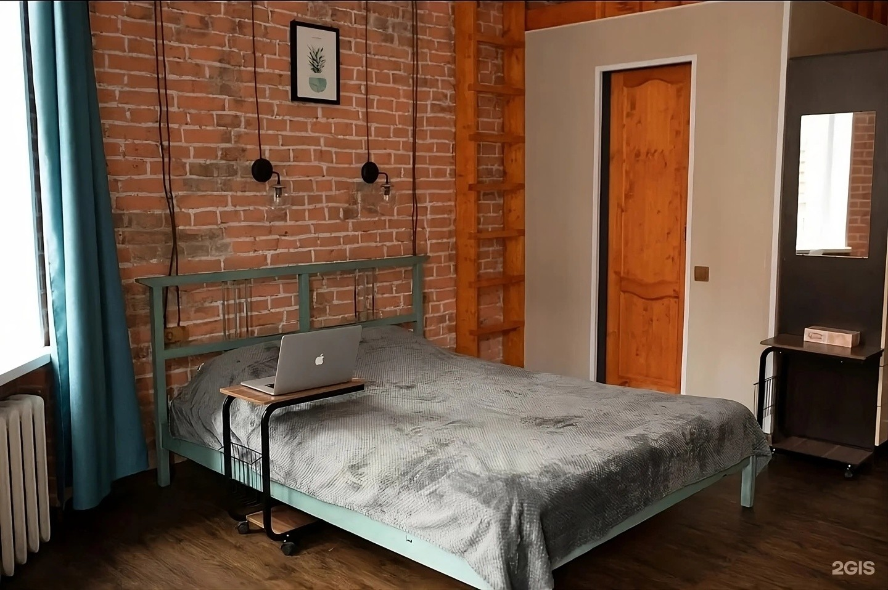
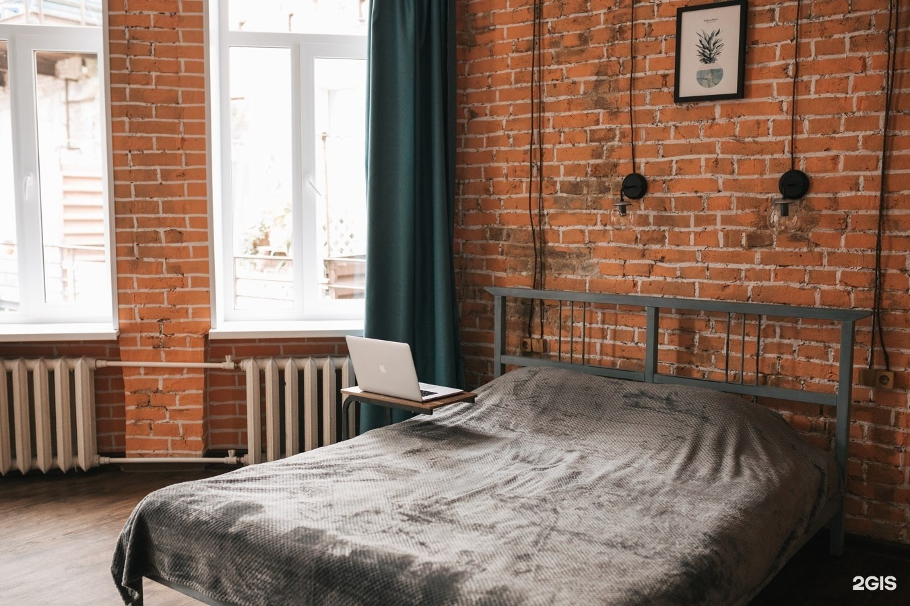
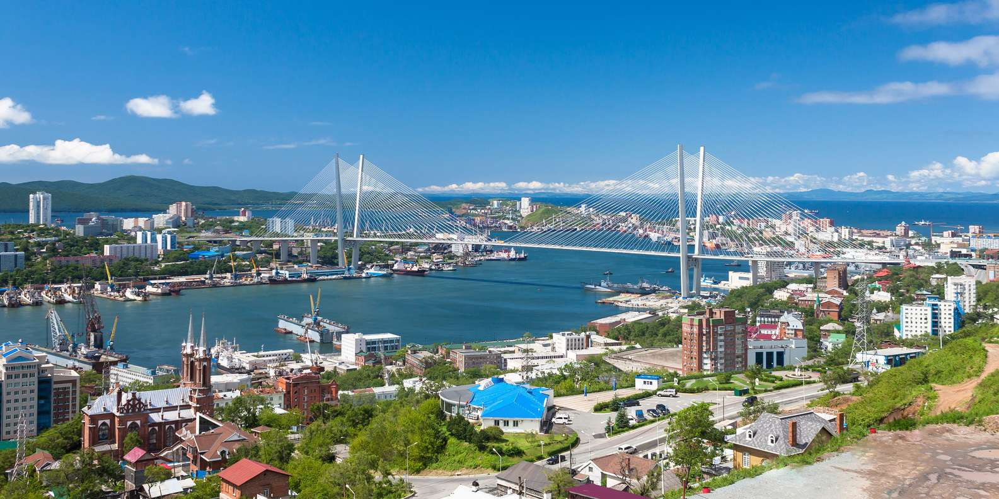
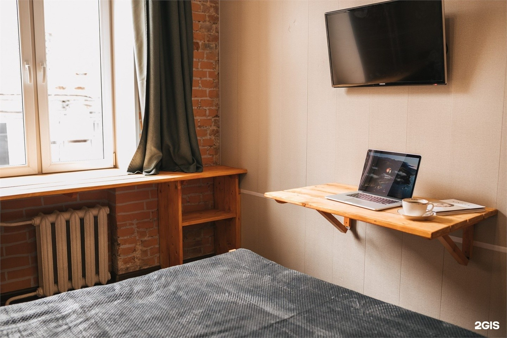
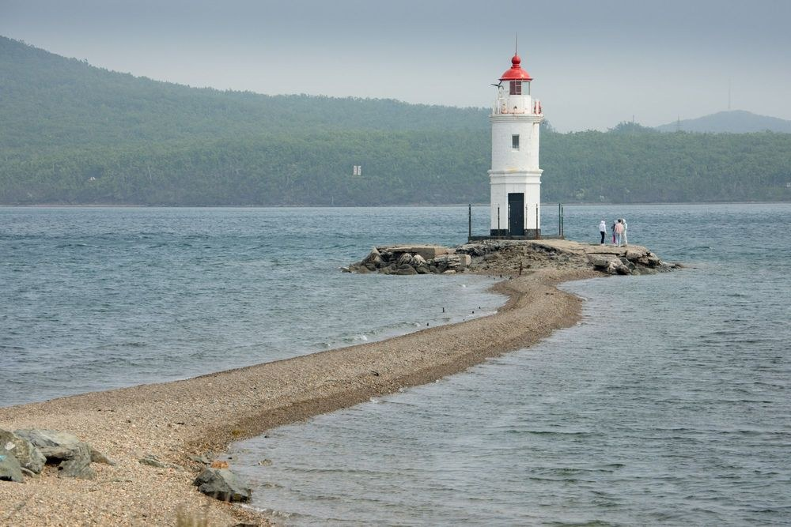

Город у Тихого океанаСвязаться с отелем
На какие даты?

Один из наших номеровОб отеле
Тут будет текст
Владивосток
Куда сходить
в городе
Если вы во Владивостоке впервые, начните с маяка Токаревского и видов на Золотой мост. Ниже — ссылки на карту: можно заранее посмотреть дорогу.
Маяк Токаревского
Маяк на краю каменистой косы. Сюда приезжают погулять у воды и посмотреть на море. Для прогулки пригодится ветровка.
Посмотреть на карте
Как узнать стоимость проживания?
Тут будет текст
Можно ли забронировать прямо на сайте?
Тут будет текст
В какое время можно заселиться?
Тут будет текст
Как узнать точный адрес апартаментов?
Тут будет текст
Можно ли приехать с детьми?
Тут будет текст
Контакты
Напишите нам
или позвоните
Узнать цены, выбрать номер или спросить о заселении —
свяжитесь с администратором удобным способом.